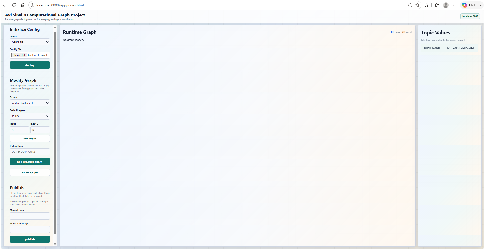
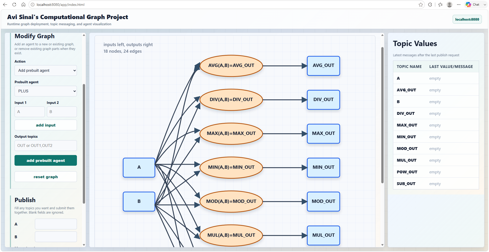
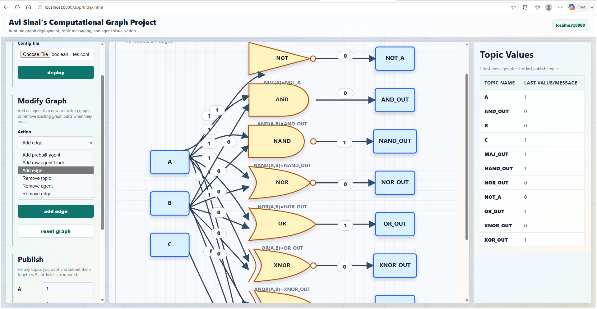
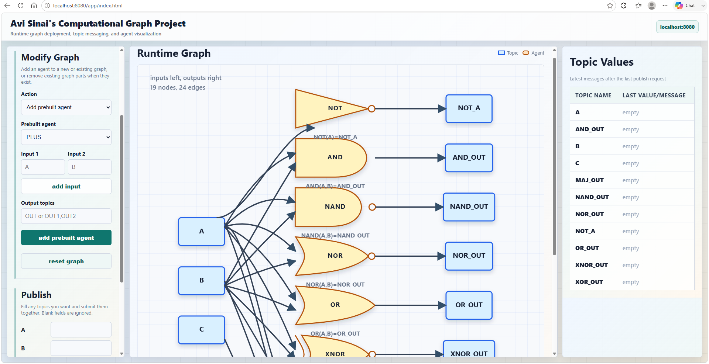
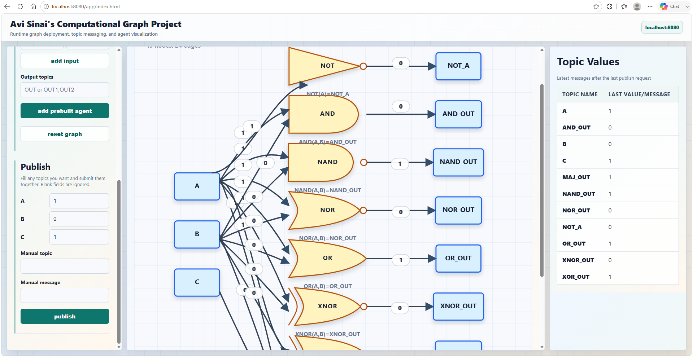

Final Project Demo
Avi Sinai's Computational Graph Project
A plain-Java runtime console for deploying, editing, running, and visualizing topic-based computational graphs.
Course: Advanced Programming
Presenter: Avi Sinai
Java 21
Opening slide1 / 7
Background
From One Calculation To A Live Runtime Graph
- Topics carry messages and remember their latest value.
- Agents subscribe to input topics and publish computed outputs.
- Config files describe the graph without recompiling code.
- The browser shows value flow through the graph as it runs.

Story and motivation2 / 7
Design
Core Architecture
Browser UIUpload, edit, publish, inspect
→
HTTP ServerSocket accept loop, routing, parser
→
ServletsConfig, graph, topics, static HTML
GenericConfigReflection-based agent loading
→
TopicsPublish-subscribe message flow
→
ParallelAgentWorker thread per deployed agent
Design slide3 / 7
Live Demo Script
Main Flow To Record
- Open http://localhost:8080/app/index.html.
- Deploy two_stage_pipeline.conf.
- Publish A = 4 and B = 6.
- Show C = 10.0 and D = 11.0.
- Reset, then deploy boolean_gates.conf.
- Publish Boolean inputs and show non-math processing.

Feature demo, target 2 minutes4 / 7
Assignment 6 Focus
Browser Console Features

- Upload or write config text directly in the browser.
- Add prebuilt math and Boolean agents.
- Add and remove legal graph edges.
- Reset active graph state with one action.
- Publish only to source topics to protect computed values.
Assignment 6 feature emphasis5 / 7
Beyond The Minimum
Extra Engineering Work
- Boolean gate family with gate-shaped SVG nodes.
- Variable-input and multi-output agents.
- Duplicate publisher validation and friendly errors.
- Cycle-aware graph layout for complex graphs.
- Bounded shutdown for full `ParallelAgent` queues.
- Generated Javadoc for the reusable HTTP server API.

Extra work and complex graph demo6 / 7
Summary
What I Learned And Will Take Forward
- How HTTP works under a framework: sockets, parsing, routing, responses.
- How to model a runtime system with small interfaces and clear ownership.
- How reflection can make a plugin-like configuration flow.
- Why concurrency lifecycle and shutdown paths matter.
- How backend state can become a useful visual tool.

Use ← and → to navigate
7 / 7